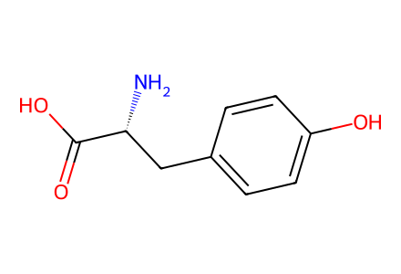
N[C@H](Cc1ccc(O)cc1)C(=O)OAll successful source-shown main Scheme 2-4 products in both enantiomeric series, plus isolated control 26 and ent-19a mixture component. Local SI unavailable. Two-step tyrosine-to-11 literature procedure remains unresolved; failed inversions and calculated transition-state structures are not synthesized compounds. Facts compiled deterministically; independent review pending.
完整 JSON · 逐步 CSV · 路线序列 · SDF · HRMS 核对
| 事件 | 分子连接 | 报告产率 | Canonical reaction SMILES |
|---|---|---|---|
| A01 | 10 → 11 | 69% over two referenced steps; retained in product_specific_yields, not a one-step isolated yield. | N[C@H](Cc1ccc(O)cc1)C(=O)O>>CC(=O)c1cc(C[C@@H](O)C(=O)O)ccc1O |
| A02 | 11 → 12 | 12: 59% | CC(=O)c1cc(C[C@@H](O)C(=O)O)ccc1O>>COc1ccc(C[C@H]2OC(C)(C)OC2=O)cc1C(C)=O |
| A03 | 12 → 13 | 13: 83% | COc1ccc(C[C@H]2OC(C)(C)OC2=O)cc1C(C)=O>>COc1ccc(C[C@H]2OC(C)(C)OC2=O)cc1OC(C)=O |
| A04 | 13 → 14 | 14: 59% | COc1ccc(C[C@H]2OC(C)(C)OC2=O)cc1OC(C)=O>>COc1ccc(C[C@H]2OC(C)(C)OC2=O)cc1O |
| A05 | 14 → 15 | 15: 54% | COc1ccc(C[C@H]2OC(C)(C)OC2=O)cc1O>>C=CCc1c(C[C@H]2OC(C)(C)OC2=O)ccc(OC)c1O |
| A06 | 15 → 16 | 16: 83% | C=CCc1c(C[C@H]2OC(C)(C)OC2=O)ccc(OC)c1O>>C=CCc1c(C[C@@H](O)C(N)=O)ccc(OC)c1O |
| A07 | 16 → 18 | 18: 94% | C=CCc1c(C[C@@H](O)C(N)=O)ccc(OC)c1O>>C=CCc1c(C[C@@H](O[Si](C)(C)C(C)(C)C)C(N)=O)ccc(OC)c1O[Si](C)(C)C(C)(C)C |
| A08 | 18 → 19 | 19: 68% | C=CCc1c(C[C@@H](O[Si](C)(C)C(C)(C)C)C(N)=O)ccc(OC)c1O[Si](C)(C)C(C)(C)C>>COc1ccc(C[C@H](CNCC(C)(C)OC=O)O[Si](C)(C)C(C)(C)C)c(CCCO)c1O[Si](C)(C)C(C)(C)C |
| A09 | 19 → 20 | 20: 80% | COc1ccc(C[C@H](CNCC(C)(C)OC=O)O[Si](C)(C)C(C)(C)C)c(CCCO)c1O[Si](C)(C)C(C)(C)C>>COc1ccc(C[C@H](CNCC(C)(C)OC=O)O[Si](C)(C)C(C)(C)C)c(CCCOS(C)(=O)=O)c1O[Si](C)(C)C(C)(C)C |
| A10 | 20 → 9 | 9: 50% | COc1ccc(C[C@H](CNCC(C)(C)OC=O)O[Si](C)(C)C(C)(C)C)c(CCCOS(C)(=O)=O)c1O[Si](C)(C)C(C)(C)C>>COc1ccc2c(c1O)CCCN(C(=O)OC(C)(C)C)C[C@H](O[Si](C)(C)C(C)(C)C)C2 |
| B01 | 9 + methyl acrylate → 21 | 21: 68% | C=CC(=O)OC.COc1ccc2c(c1O)CCCN(C(=O)OC(C)(C)C)C[C@H](O[Si](C)(C)C(C)(C)C)C2>>COC(=O)[C@@H]1C[C@@H]2C=C3C[C@@H](O[Si](C)(C)C(C)(C)C)CN(C(=O)OC(C)(C)C)CCC[C@@]31C(=O)C2(OC)OC |
| B02 | 21 → 7 | not reported | COC(=O)[C@@H]1C[C@@H]2C=C3C[C@@H](O[Si](C)(C)C(C)(C)C)CN(C(=O)OC(C)(C)C)CCC[C@@]31C(=O)C2(OC)OC>>COC1(OC)C(=O)[C@]23CCCN(C(=O)OC(C)(C)C)C[C@H](O[Si](C)(C)C(C)(C)C)CC2=C[C@H]1C[C@H]3C=O |
| B03 | 7 + methoxymethyl phosphonium chloride → 22 | 22: 22% | COC1(OC)C(=O)[C@]23CCCN(C(=O)OC(C)(C)C)C[C@H](O[Si](C)(C)C(C)(C)C)CC2=C[C@H]1C[C@H]3C=O.COC[P+](c1ccccc1)(c1ccccc1)c1ccccc1.[Cl-]>>CO/C=C\[C@@H]1C[C@@H]2C=C3C[C@@H](O[Si](C)(C)C(C)(C)C)CN(C(=O)OC(C)(C)C)CCC[C@@]31C(=O)C2 |
| B04 | 22 → 23 | not reported | CO/C=C\[C@@H]1C[C@@H]2C=C3C[C@@H](O[Si](C)(C)C(C)(C)C)CN(C(=O)OC(C)(C)C)CCC[C@@]31C(=O)C2>>CC(C)(C)OC(=O)N1CCC[C@@]23C(=C[C@@H](C[C@H]2CC=O)C[C@H]3O)C[C@@H](O[Si](C)(C)C(C)(C)C)C1 |
| B05 | 23 → 24 | 24: 36% | CC(C)(C)OC(=O)N1CCC[C@@]23C(=C[C@@H](C[C@H]2CC=O)C[C@H]3O)C[C@@H](O[Si](C)(C)C(C)(C)C)C1>>CC(C)(C)OC(=O)N1CCC[C@]23[C@@H]4CC(=O)[C@]2(C[C@@H](C4)C[C@H]3O)C[C@@H](O[Si](C)(C)C(C)(C)C)C1 |
| B06 | 24 → 6 | 6: 69% | CC(C)(C)OC(=O)N1CCC[C@]23[C@@H]4CC(=O)[C@]2(C[C@@H](C4)C[C@H]3O)C[C@@H](O[Si](C)(C)C(C)(C)C)C1>>CC(C)(C)OC(=O)N1CCC[C@]23C(=O)C[C@@H]4C[C@H]2CC(=O)[C@]3(C4)C[C@@H](O[Si](C)(C)C(C)(C)C)C1 |
| B07 | 6 → 25 | 25: 48% | CC(C)(C)OC(=O)N1CCC[C@]23C(=O)C[C@@H]4C[C@H]2CC(=O)[C@]3(C4)C[C@@H](O[Si](C)(C)C(C)(C)C)C1>>O=C1C[C@@H]2C[C@@H]3C[C@]14C[C@@H](O)CN1CCC[C@]24[C@]1(O)C3 |
| B08 | 25 + formaldehyde → 1 | 1: 70% | C=O.O=C1C[C@@H]2C[C@@H]3C[C@]14C[C@@H](O)CN1CCC[C@]24[C@]1(O)C3>>CN1CCC[C@]23C(=O)C[C@@H]4C[C@H]2CC(=O)[C@@]3(C[C@@H](O)C1)C4 |
| ent-A01 | ent-10 → ent-11 | 69% over two referenced steps; retained in product_specific_yields, not a one-step isolated yield. | N[C@@H](Cc1ccc(O)cc1)C(=O)O>>CC(=O)c1cc(C[C@H](O)C(=O)O)ccc1O |
| ent-A02 | ent-11 → ent-12 | ent-12: 80% | CC(=O)c1cc(C[C@H](O)C(=O)O)ccc1O>>COc1ccc(C[C@@H]2OC(C)(C)OC2=O)cc1C(C)=O |
| ent-A03 | ent-12 → ent-13 | ent-13: 91% | COc1ccc(C[C@@H]2OC(C)(C)OC2=O)cc1C(C)=O>>COc1ccc(C[C@@H]2OC(C)(C)OC2=O)cc1OC(C)=O |
| ent-A04 | ent-13 → ent-14 | ent-14: 60% | COc1ccc(C[C@@H]2OC(C)(C)OC2=O)cc1OC(C)=O>>COc1ccc(C[C@@H]2OC(C)(C)OC2=O)cc1O |
| ent-A05 | ent-14 → ent-15 | ent-15: 60% | COc1ccc(C[C@@H]2OC(C)(C)OC2=O)cc1O>>C=CCc1c(C[C@@H]2OC(C)(C)OC2=O)ccc(OC)c1O |
| ent-A06 | ent-15 → ent-16 | ent-16: 83% | C=CCc1c(C[C@@H]2OC(C)(C)OC2=O)ccc(OC)c1O>>C=CCc1c(C[C@H](O)C(N)=O)ccc(OC)c1O |
| ent-A07 | ent-16 → ent-18 | ent-18: 88% | C=CCc1c(C[C@H](O)C(N)=O)ccc(OC)c1O>>C=CCc1c(C[C@H](O[Si](C)(C)C(C)(C)C)C(N)=O)ccc(OC)c1O[Si](C)(C)C(C)(C)C |
| ent-A08 | ent-18 → ent-19 | ent-19: 67% | C=CCc1c(C[C@H](O[Si](C)(C)C(C)(C)C)C(N)=O)ccc(OC)c1O[Si](C)(C)C(C)(C)C>>COc1ccc(C[C@@H](CNCC(C)(C)OC=O)O[Si](C)(C)C(C)(C)C)c(CCCO)c1O[Si](C)(C)C(C)(C)C |
| ent-A09 | ent-19 → ent-20 | ent-20: 71% | COc1ccc(C[C@@H](CNCC(C)(C)OC=O)O[Si](C)(C)C(C)(C)C)c(CCCO)c1O[Si](C)(C)C(C)(C)C>>COc1ccc(C[C@@H](CNCC(C)(C)OC=O)O[Si](C)(C)C(C)(C)C)c(CCCOS(C)(=O)=O)c1O[Si](C)(C)C(C)(C)C |
| ent-A10 | ent-20 → ent-9 | ent-9: 65% | COc1ccc(C[C@@H](CNCC(C)(C)OC=O)O[Si](C)(C)C(C)(C)C)c(CCCOS(C)(=O)=O)c1O[Si](C)(C)C(C)(C)C>>COc1ccc2c(c1O)CCCN(C(=O)OC(C)(C)C)C[C@@H](O[Si](C)(C)C(C)(C)C)C2 |
| ent-B01 | ent-9 + methyl acrylate → ent-21 | ent-21: 75% | C=CC(=O)OC.COc1ccc2c(c1O)CCCN(C(=O)OC(C)(C)C)C[C@@H](O[Si](C)(C)C(C)(C)C)C2>>COC(=O)[C@H]1C[C@H]2C=C3C[C@H](O[Si](C)(C)C(C)(C)C)CN(C(=O)OC(C)(C)C)CCC[C@]31C(=O)C2(OC)OC |
| ent-B02 | ent-21 → ent-7 | not reported | COC(=O)[C@H]1C[C@H]2C=C3C[C@H](O[Si](C)(C)C(C)(C)C)CN(C(=O)OC(C)(C)C)CCC[C@]31C(=O)C2(OC)OC>>COC1(OC)C(=O)[C@@]23CCCN(C(=O)OC(C)(C)C)C[C@@H](O[Si](C)(C)C(C)(C)C)CC2=C[C@@H]1C[C@@H]3C=O |
| ent-B03 | ent-7 + methoxymethyl phosphonium chloride → ent-22 | ent-22: 29% | COC1(OC)C(=O)[C@@]23CCCN(C(=O)OC(C)(C)C)C[C@@H](O[Si](C)(C)C(C)(C)C)CC2=C[C@@H]1C[C@@H]3C=O.COC[P+](c1ccccc1)(c1ccccc1)c1ccccc1.[Cl-]>>CO/C=C\[C@H]1C[C@H]2C=C3C[C@H](O[Si](C)(C)C(C)(C)C)CN(C(=O)OC(C)(C)C)CCC[C@]31C(=O)C2 |
| ent-B04 | ent-22 → ent-23 | not reported | CO/C=C\[C@H]1C[C@H]2C=C3C[C@H](O[Si](C)(C)C(C)(C)C)CN(C(=O)OC(C)(C)C)CCC[C@]31C(=O)C2>>CC(C)(C)OC(=O)N1CCC[C@]23C(=C[C@H](C[C@@H]2CC=O)C[C@@H]3O)C[C@H](O[Si](C)(C)C(C)(C)C)C1 |
| ent-B05 | ent-23 → ent-24 | ent-24: 41% | CC(C)(C)OC(=O)N1CCC[C@]23C(=C[C@H](C[C@@H]2CC=O)C[C@@H]3O)C[C@H](O[Si](C)(C)C(C)(C)C)C1>>CC(C)(C)OC(=O)N1CCC[C@@]23[C@H]4CC(=O)[C@@]2(C[C@H](C4)C[C@@H]3O)C[C@H](O[Si](C)(C)C(C)(C)C)C1 |
| ent-B06 | ent-24 → ent-6 | ent-6: 78% | CC(C)(C)OC(=O)N1CCC[C@@]23[C@H]4CC(=O)[C@@]2(C[C@H](C4)C[C@@H]3O)C[C@H](O[Si](C)(C)C(C)(C)C)C1>>CC(C)(C)OC(=O)N1CCC[C@@]23C(=O)C[C@H]4C[C@@H]2CC(=O)[C@@]3(C4)C[C@H](O[Si](C)(C)C(C)(C)C)C1 |
| ent-B07 | ent-6 → ent-25 | ent-25: 44% | CC(C)(C)OC(=O)N1CCC[C@@]23C(=O)C[C@H]4C[C@@H]2CC(=O)[C@@]3(C4)C[C@H](O[Si](C)(C)C(C)(C)C)C1>>O=C1C[C@H]2C[C@H]3C[C@@]14C[C@H](O)CN1CCC[C@@]24[C@@]1(O)C3 |
| ent-B08 | ent-25 + formaldehyde → ent-1 | ent-1: 82% | C=O.O=C1C[C@H]2C[C@H]3C[C@@]14C[C@H](O)CN1CCC[C@@]24[C@@]1(O)C3>>CN1CCC[C@@]23C(=O)C[C@H]4C[C@@H]2CC(=O)[C@]3(C[C@H](O)C1)C4 |
| ALT01 | ent-13 → 17 | 17: 69% | COc1ccc(C[C@@H]2OC(C)(C)OC2=O)cc1OC(C)=O>>C=CCOc1cc(C[C@H](O)C(N)=O)ccc1OC |
| ALT02 | 17 → ent-16 | ent-16: 40% | C=CCOc1cc(C[C@H](O)C(N)=O)ccc1OC>>C=CCc1c(C[C@H](O)C(N)=O)ccc(OC)c1O |
| CTRL01 | ent-18 → ent-19a | not reported | C=CCc1c(C[C@H](O[Si](C)(C)C(C)(C)C)C(N)=O)ccc(OC)c1O[Si](C)(C)C(C)(C)C>>CCCc1c(C[C@@H](CNCC(C)(C)OC=O)O[Si](C)(C)C(C)(C)C)ccc(OC)c1O[Si](C)(C)C(C)(C)C |
| CTRL02 | 6 → 26 | not reported | CC(C)(C)OC(=O)N1CCC[C@]23C(=O)C[C@@H]4C[C@H]2CC(=O)[C@]3(C4)C[C@@H](O[Si](C)(C)C(C)(C)C)C1>>CC(C)(C)OC(=O)N1CCC[C@]23C(=O)C[C@@H]4C[C@H]2CC(=O)[C@@]3(C[C@@H](O)C1)C4 |
| C01 | 25 → 29 | not reported | O=C1C[C@@H]2C[C@@H]3C[C@]14C[C@@H](O)CN1CCC[C@]24[C@]1(O)C3>>O=C1CN2CCC[C@]34[C@@H]5CC(=O)[C@@]3(C1)C[C@@H](C5)C[C@]24O |
| C02 | 29 → 30 | not reported | O=C1CN2CCC[C@]34[C@@H]5CC(=O)[C@@]3(C1)C[C@@H](C5)C[C@]24O>>O=C1C[C@@H]2C[C@@H]3C[C@]14C[C@H](O)CN1CCC[C@]24[C@]1(O)C3 |
| C03 | 30 + formaldehyde → 2 | 2: 25% | C=O.O=C1C[C@@H]2C[C@@H]3C[C@]14C[C@H](O)CN1CCC[C@]24[C@]1(O)C3>>CN1CCC[C@]23C(=O)C[C@@H]4C[C@H]2CC(=O)[C@@]3(C[C@H](O)C1)C4 |

N[C@H](Cc1ccc(O)cc1)C(=O)O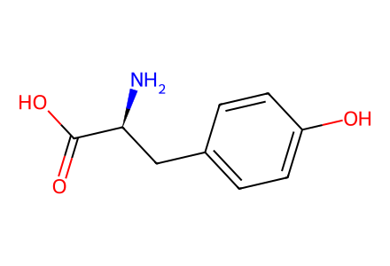
N[C@@H](Cc1ccc(O)cc1)C(=O)O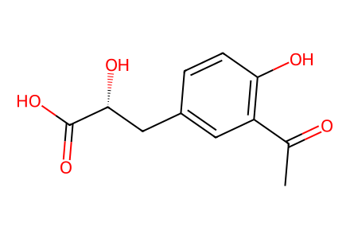
CC(=O)c1cc(C[C@@H](O)C(=O)O)ccc1O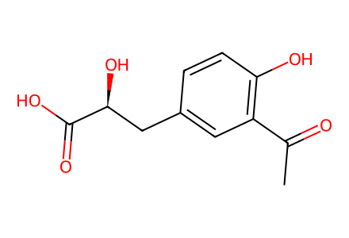
CC(=O)c1cc(C[C@H](O)C(=O)O)ccc1O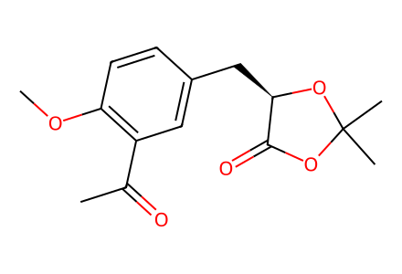
COc1ccc(C[C@H]2OC(C)(C)OC2=O)cc1C(C)=O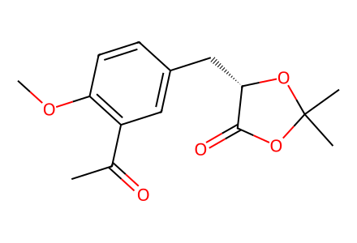
COc1ccc(C[C@@H]2OC(C)(C)OC2=O)cc1C(C)=O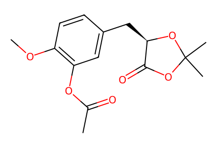
COc1ccc(C[C@H]2OC(C)(C)OC2=O)cc1OC(C)=O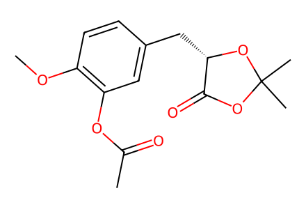
COc1ccc(C[C@@H]2OC(C)(C)OC2=O)cc1OC(C)=O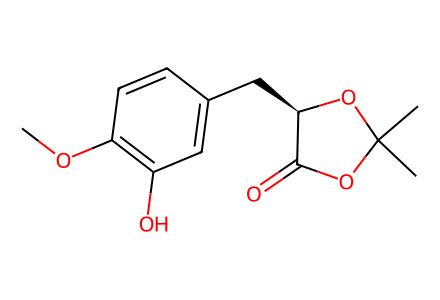
COc1ccc(C[C@H]2OC(C)(C)OC2=O)cc1O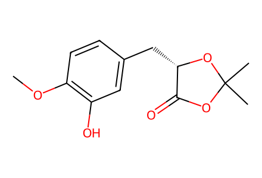
COc1ccc(C[C@@H]2OC(C)(C)OC2=O)cc1O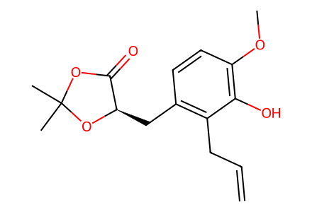
C=CCc1c(C[C@H]2OC(C)(C)OC2=O)ccc(OC)c1O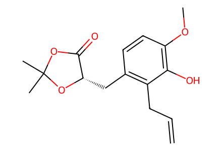
C=CCc1c(C[C@@H]2OC(C)(C)OC2=O)ccc(OC)c1O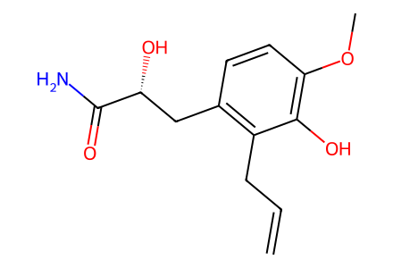
C=CCc1c(C[C@@H](O)C(N)=O)ccc(OC)c1O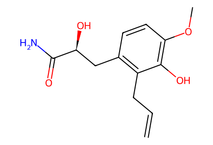
C=CCc1c(C[C@H](O)C(N)=O)ccc(OC)c1O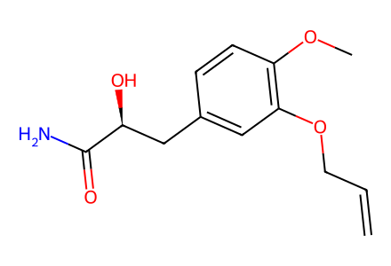
C=CCOc1cc(C[C@H](O)C(N)=O)ccc1OC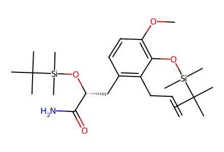
C=CCc1c(C[C@@H](O[Si](C)(C)C(C)(C)C)C(N)=O)ccc(OC)c1O[Si](C)(C)C(C)(C)C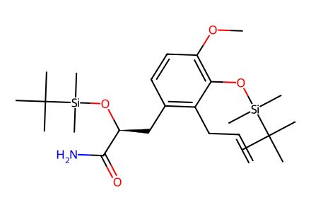
C=CCc1c(C[C@H](O[Si](C)(C)C(C)(C)C)C(N)=O)ccc(OC)c1O[Si](C)(C)C(C)(C)C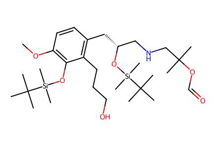
COc1ccc(C[C@H](CNCC(C)(C)OC=O)O[Si](C)(C)C(C)(C)C)c(CCCO)c1O[Si](C)(C)C(C)(C)C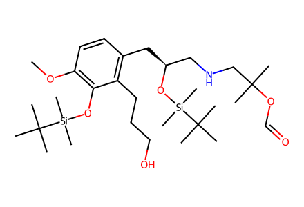
COc1ccc(C[C@@H](CNCC(C)(C)OC=O)O[Si](C)(C)C(C)(C)C)c(CCCO)c1O[Si](C)(C)C(C)(C)C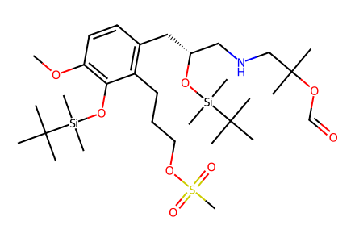
COc1ccc(C[C@H](CNCC(C)(C)OC=O)O[Si](C)(C)C(C)(C)C)c(CCCOS(C)(=O)=O)c1O[Si](C)(C)C(C)(C)C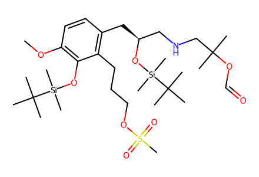
COc1ccc(C[C@@H](CNCC(C)(C)OC=O)O[Si](C)(C)C(C)(C)C)c(CCCOS(C)(=O)=O)c1O[Si](C)(C)C(C)(C)C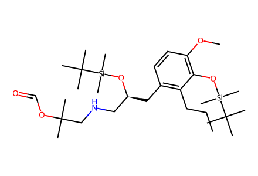
CCCc1c(C[C@@H](CNCC(C)(C)OC=O)O[Si](C)(C)C(C)(C)C)ccc(OC)c1O[Si](C)(C)C(C)(C)C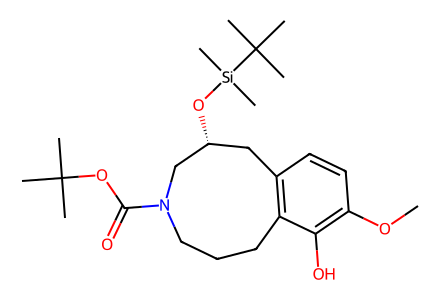
COc1ccc2c(c1O)CCCN(C(=O)OC(C)(C)C)C[C@H](O[Si](C)(C)C(C)(C)C)C2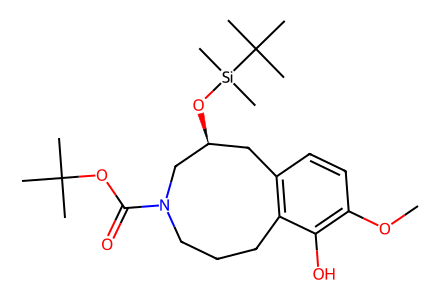
COc1ccc2c(c1O)CCCN(C(=O)OC(C)(C)C)C[C@@H](O[Si](C)(C)C(C)(C)C)C2
C=CC(=O)OC
COC[P+](c1ccccc1)(c1ccccc1)c1ccccc1.[Cl-]
C=O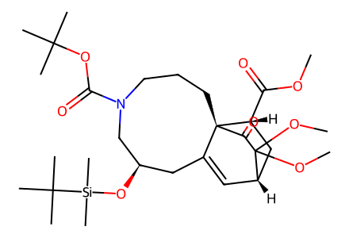
COC(=O)[C@@H]1C[C@@H]2C=C3C[C@@H](O[Si](C)(C)C(C)(C)C)CN(C(=O)OC(C)(C)C)CCC[C@@]31C(=O)C2(OC)OC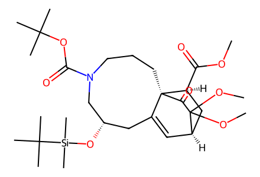
COC(=O)[C@H]1C[C@H]2C=C3C[C@H](O[Si](C)(C)C(C)(C)C)CN(C(=O)OC(C)(C)C)CCC[C@]31C(=O)C2(OC)OC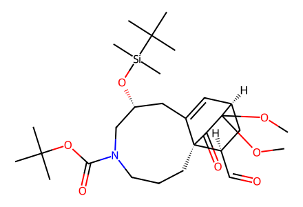
COC1(OC)C(=O)[C@]23CCCN(C(=O)OC(C)(C)C)C[C@H](O[Si](C)(C)C(C)(C)C)CC2=C[C@H]1C[C@H]3C=O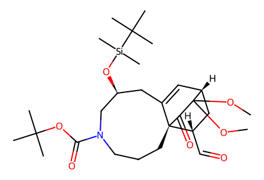
COC1(OC)C(=O)[C@@]23CCCN(C(=O)OC(C)(C)C)C[C@@H](O[Si](C)(C)C(C)(C)C)CC2=C[C@@H]1C[C@@H]3C=O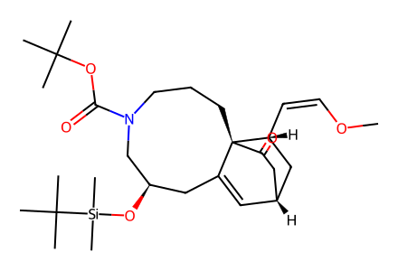
CO/C=C\[C@@H]1C[C@@H]2C=C3C[C@@H](O[Si](C)(C)C(C)(C)C)CN(C(=O)OC(C)(C)C)CCC[C@@]31C(=O)C2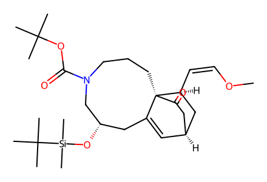
CO/C=C\[C@H]1C[C@H]2C=C3C[C@H](O[Si](C)(C)C(C)(C)C)CN(C(=O)OC(C)(C)C)CCC[C@]31C(=O)C2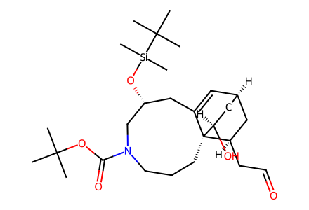
CC(C)(C)OC(=O)N1CCC[C@@]23C(=C[C@@H](C[C@H]2CC=O)C[C@H]3O)C[C@@H](O[Si](C)(C)C(C)(C)C)C1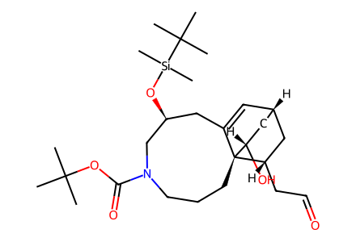
CC(C)(C)OC(=O)N1CCC[C@]23C(=C[C@H](C[C@@H]2CC=O)C[C@@H]3O)C[C@H](O[Si](C)(C)C(C)(C)C)C1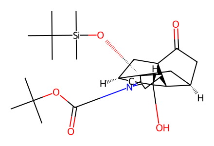
CC(C)(C)OC(=O)N1CCC[C@]23[C@@H]4CC(=O)[C@]2(C[C@@H](C4)C[C@H]3O)C[C@@H](O[Si](C)(C)C(C)(C)C)C1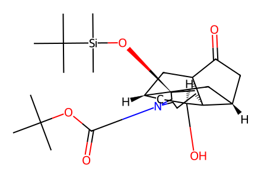
CC(C)(C)OC(=O)N1CCC[C@@]23[C@H]4CC(=O)[C@@]2(C[C@H](C4)C[C@@H]3O)C[C@H](O[Si](C)(C)C(C)(C)C)C1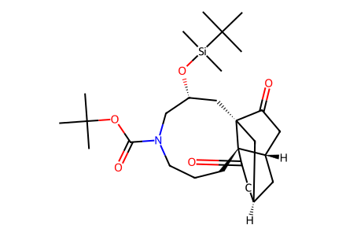
CC(C)(C)OC(=O)N1CCC[C@]23C(=O)C[C@@H]4C[C@H]2CC(=O)[C@]3(C4)C[C@@H](O[Si](C)(C)C(C)(C)C)C1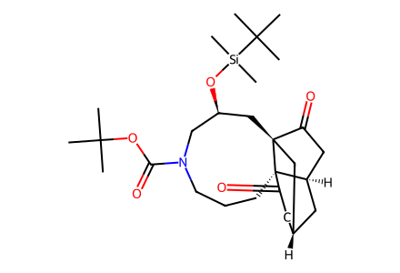
CC(C)(C)OC(=O)N1CCC[C@@]23C(=O)C[C@H]4C[C@@H]2CC(=O)[C@@]3(C4)C[C@H](O[Si](C)(C)C(C)(C)C)C1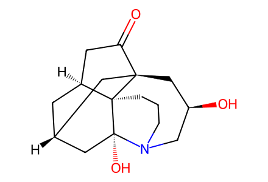
O=C1C[C@@H]2C[C@@H]3C[C@]14C[C@@H](O)CN1CCC[C@]24[C@]1(O)C3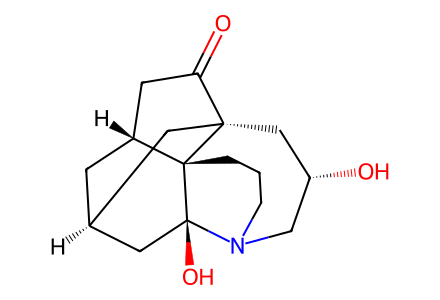
O=C1C[C@H]2C[C@H]3C[C@@]14C[C@H](O)CN1CCC[C@@]24[C@@]1(O)C3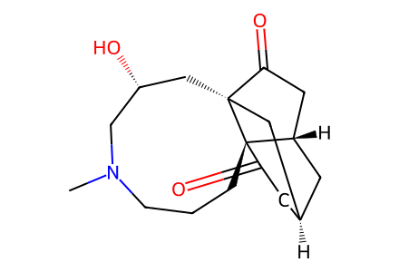
CN1CCC[C@]23C(=O)C[C@@H]4C[C@H]2CC(=O)[C@@]3(C[C@@H](O)C1)C4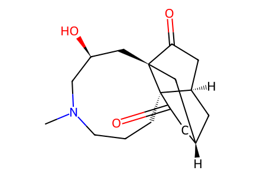
CN1CCC[C@@]23C(=O)C[C@H]4C[C@@H]2CC(=O)[C@]3(C[C@H](O)C1)C4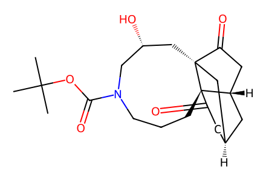
CC(C)(C)OC(=O)N1CCC[C@]23C(=O)C[C@@H]4C[C@H]2CC(=O)[C@@]3(C[C@@H](O)C1)C4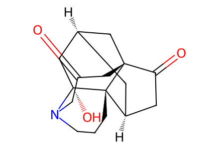
O=C1CN2CCC[C@]34[C@@H]5CC(=O)[C@@]3(C1)C[C@@H](C5)C[C@]24O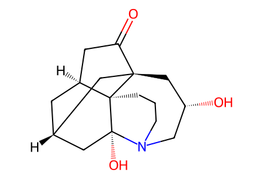
O=C1C[C@@H]2C[C@@H]3C[C@]14C[C@H](O)CN1CCC[C@]24[C@]1(O)C3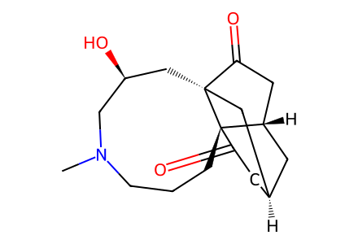
CN1CCC[C@]23C(=O)C[C@@H]4C[C@H]2CC(=O)[C@@]3(C[C@H](O)C1)C4A01: Correct false one-step segmentation; preserve combined yield without inventing intermediate identities or conditions.
ent-A01: Correct false one-step segmentation; preserve combined yield without inventing intermediate identities or conditions.